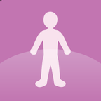

Pick a calculator. Everything works offline and stays on your phone.
No calculator matches that. Try mes.fm
Body

BMI CalculatorBMI, healthy weight range and a history chartBody Fat CalculatorU.S. Navy tape method, lean mass and goalsIdeal WeightFour classic formulas next to the healthy rangeWaist-to-Hip RatioWHR, waist-to-height and body shapeFood and water
Training
Sleep
BMI Calculator
Mix units freely: type weight in kg or lb and height in cm or ft + in, in any combination — the other fields fill in as you type.
Every field stays in step with its twin. Adults 20 and over only; see the notes below.
My measurements
How BMI is calculated
Body Mass Index is your weight divided by your height squared:
BMI = weight (kg) ÷ height (m)² or 703 × weight (lb) ÷ height (in)²
For example, 65.8 kg at 182.9 cm is 65.8 ÷ (1.829 × 1.829) = 19.7, in the normal range.
BMI categories for adults
The WHO standard cut-offs are used by most countries. The WHO Asia-Pacific cut-offs (overweight from 23, obese from 27.5) reflect the higher health risk at lower BMI in many Asian populations. Switch the BMI scale above to use them.
Important notes on BMI
BMI is a general screening tool, not a diagnosis. It assumes a “normal” proportion of weight to height for people of average build and activity, which has some limits:
- It does not tell muscle from fat: athletes and bodybuilders can have a high BMI with low body fat.
- Body shape, bone structure, age, sex and ethnicity all change what a healthy weight looks like.
- It does not show where fat is carried; a larger waist measurement is a separate risk marker.
- Children and teens (2–19) are judged with BMI-for-age percentiles, not these cut-offs: use a growth chart such as the CDC child and teen BMI calculator.
BMI is still popular because it is the simplest index to compute and has decades of research behind it. Talk to a doctor or dietitian before starting a new diet or fitness plan. What is BMI? · BMI chart · BMI formula · Health tips
Is my data private?
Yes. Your numbers and saved measurements stay in this browser. Nothing is uploaded unless you copy a link and share it yourself.
Body Fat Calculator
Tape measurements (for the U.S. Navy method, the most accurate of the quick ones): measure bare skin, relaxed, to the nearest half cm / quarter inch. Skip them to get the BMI-based estimate only.
Where you are
Set a body-fat goal
Assumes you keep all your muscle and lose only fat, which is the best case; most people lose a little of both.
Compare the methods
Tape and formula methods are typically within 3–4 percentage points of a DEXA scan for an average person, and less accurate at the extremes (very lean, very muscular or very heavy).
How this body fat calculator works
Body fat percentage is the share of your weight that is fat. It tells you more than BMI, because it separates fat from muscle, bone and water. This calculator gives two estimates:
- U.S. Navy method (tape measure): uses height, neck and waist (plus hips for women). Men: 495 ÷ (1.0324 − 0.19077 × log10(waist − neck) + 0.15456 × log10(height)) − 450. Women: 495 ÷ (1.29579 − 0.35004 × log10(waist + hips − neck) + 0.22100 × log10(height)) − 450, with measurements in cm.
- BMI method (Deurenberg, 1991): 1.20 × BMI + 0.23 × age − 10.8 × (1 for men, 0 for women) − 5.4. It needs no tape, but it assumes an average build, so it overestimates in muscular people.
Body fat percentage categories
Ranges from the American Council on Exercise. Essential fat is the minimum your body needs to function; staying near or below it is unhealthy. Healthy ranges also rise somewhat with age.
How to measure properly
- Neck: just below the larynx (Adam's apple), sloping slightly down at the front, tape snug but not squeezing.
- Waist: men at the navel; women at the narrowest point (or the navel if there is no obvious narrowing). Relax and breathe out; do not suck in.
- Hips (women): the widest point of the buttocks, feet together.
- Measure three times and use the average. Measure at the same time of day (mornings are most consistent).
Questions
- What is a good body fat percentage?
- For general health, roughly 10–20% for men and 18–28% for women is a common target, with athletes lower. See the table above.
- Is this as accurate as a DEXA scan or calipers?
- No. A DEXA scan, hydrostatic weighing or a good caliper reading from a trained person is more accurate. The tape method is good for tracking change over time with the same technique.
- Why do my two estimates differ?
- The BMI method cannot tell muscle from fat, so it reads high for muscular people and low for people who carry little muscle. Trust the tape method more, and look at the trend.
- Is my data private?
- Yes. Everything stays in your browser. Nothing is uploaded unless you copy a link and share it yourself.
Related: BMR Calculator (use your body-fat % for the Katch-McArdle equation) · BMI Calculator
Ideal Weight
Where the formulas land
Each formula
Ideal weight at every height
The shaded band is the healthy BMI range (18.5–24.9). The dashed line marks your height.
How ideal body weight is calculated
There is no single “ideal” weight, so this calculator shows four classic formulas side by side with the healthy BMI range. Each formula starts from a base weight at 5 feet (152.4 cm) and adds a fixed number of kilograms for every inch above it:
For example, a man of 180 cm (70.9 in, 10.9 inches over 5 ft) has a Devine ideal weight of 50 + 2.3 × 10.9 = 75 kg (165 lb).
Ideal weight versus healthy weight range
The formulas give a single number and ignore build, age and muscle. The healthy BMI range (BMI 18.5 to 24.9) gives a band of weights that is more realistic: anywhere inside it is generally considered healthy for adults. Most people do well somewhere in the middle of the band, and athletes with a lot of muscle can sit above it without any excess fat.
Questions
- Which formula is the most accurate?
- None is “right”. They were written for different purposes (the Devine formula to dose medicine) and disagree by a few kilos. Look at the range, not one number.
- Do the formulas work below 5 feet or for very tall people?
- They are extended in a straight line, so they get less reliable at the extremes. The healthy BMI band is better there.
- Does age matter?
- These formulas ignore age; adults over 60 often do well slightly above the middle of the BMI range. Children and teens need growth charts.
- Is my data private?
- Yes. Everything stays in this browser.
This is general information, not medical advice. Related: BMI Calculator · Body Fat Calculator · BMR Calculator
Waist-to-Hip Ratio
Measure bare skin, standing relaxed, breathing out. Waist: halfway between the lowest rib and the top of the hip bone (about the navel). Hips: the widest part of the buttocks.
Your measurements on the scale
What if my waist changed?
What is the waist-to-hip ratio?
The waist-to-hip ratio (WHR) is your waist measurement divided by your hip measurement. It shows where you carry body fat: fat around the middle (an “apple” shape) raises the risk of heart disease and type 2 diabetes more than fat on the hips and thighs (a “pear” shape). It can pick up risk that BMI misses.
Example: a woman with a 78 cm waist and 100 cm hips has WHR = 78 ÷ 100 = 0.78, in the low-risk range.
WHR risk levels (World Health Organization)
Waist-to-height ratio: “keep your waist under half your height”
The waist-to-height ratio (WHtR) is your waist divided by your height. A simple rule works for adults of any size, sex and (largely) ethnicity: keep it below 0.5. Studies suggest it predicts heart and metabolic risk at least as well as BMI. At 0.5–0.59 risk is increased, and from 0.6 it is high.
Questions
- Which is better: WHR, WHtR or waist size alone?
- All three measure belly fat. Waist size and WHtR are the easiest and are often the best predictors; WHR adds the hip, which helps for shape. Use whichever you can track consistently.
- How can I lower my waist measurement?
- You cannot spot-reduce fat, but eating a little less, moving more, building muscle, sleeping well and limiting alcohol all reduce belly fat over time.
- Do the ranges apply to everyone?
- They are for adults. Some groups (for example people of South Asian descent) have higher risk at lower measurements. Children, pregnant women and very muscular people need other guidance.
- Is my data private?
- Yes. Everything stays in this browser.
General information, not medical advice. Related: Body Fat Calculator · BMI Calculator · Ideal Weight Calculator
BMR and TDEE
Mix units freely: type weight in kg or lb and height in cm or ft + in; the other fields fill in as you type.
Know your body-fat %? (optional, unlocks Katch-McArdle and Cunningham)
Do not know it? Estimate your body fat with a tape measure.
Where your energy goes
Estimates: digesting food is taken as about 10% of your total, and the organ shares are typical resting figures (Elia, 1992), not measurements of you.
Calories for your goal
What if I eat…? Try your own calories
Weekly steps use 7,700 kcal per kg and recalculate your maintenance as your weight changes, so a fixed deficit slows down over time, as it does in real life. It ignores water weight, muscle changes and individual metabolism.
Compare the equations
They usually agree within about 5-10%. Pick one and stick with it, then adjust from how your weight actually changes over 2-3 weeks.
Calories at every activity level
Your BMR through life
The same weight and height at every age. Resting burn drifts down with age (about 5 kcal a day per year with Mifflin-St Jeor), mostly because of lost muscle, so keeping muscle matters.
What is BMR (basal metabolic rate)?
Your basal metabolic rate is the energy your body burns in a day just to stay alive: breathing, circulating blood, keeping body temperature, repairing cells and running the brain and organs. It is measured at complete rest, so it is the minimum, not what you actually burn. Multiply it by an activity factor and you get your TDEE (total daily energy expenditure), the calories that keep your weight steady.
How this BMR calculator works
It uses published equations, selectable above (the default is Mifflin-St Jeor):
- Mifflin-St Jeor: men 10 × kg + 6.25 × cm − 5 × age + 5; women 10 × kg + 6.25 × cm − 5 × age − 161.
- Revised Harris-Benedict: men 88.362 + 13.397 × kg + 4.799 × cm − 5.677 × age; women 447.593 + 9.247 × kg + 3.098 × cm − 4.330 × age.
- Katch-McArdle: 370 + 21.6 × lean body mass (kg), where lean mass = weight × (1 − body fat).
- Cunningham: 500 + 22 × lean body mass (kg).
Example: a 30-year-old man at 80 kg and 180 cm has a Mifflin-St Jeor BMR of 10×80 + 6.25×180 − 5×30 + 5 = 1,780 kcal/day. Moderately active (×1.55) that is about 2,759 kcal/day to maintain his weight.
Activity multipliers
Losing or gaining weight
A pound of body weight is roughly 3,500 kcal (about 7,700 kcal per kg), so a 500 kcal daily deficit loses around 0.5 kg (1 lb) a week. The calculator shows each target next to the lowest intake it considers reasonable without supervision: never below your BMR, and not under about 1,200 kcal (women) or 1,500 kcal (men). Real results vary, because the body adapts as you lose weight.
How accurate is it?
Equations estimate an average person. Two people with the same age, sex, weight and height can differ by 10% or more because of muscle mass, genetics, hormones, medication and thyroid function. Muscle burns more than fat, which is why the lean-mass equations are better when you know your body-fat %. Treat the result as a starting point, then adjust it from your own weight trend. This is general information, not medical advice: talk to a doctor or dietitian before a major change in how you eat, especially if you are pregnant, a teenager, or have a medical condition.
Questions
- Is BMR the same as RMR?
- Nearly. RMR (resting metabolic rate) is measured under looser conditions and is usually a little higher. The equations above are used for both in practice.
- How many calories should I eat a day?
- That depends on your goal. Eating your TDEE keeps your weight; eating less loses weight, eating more gains it. See the goal table above.
- Does BMR change with age?
- Yes. It falls roughly 1-2% per decade in adulthood, mostly as muscle is lost; strength training helps keep it up.
- Is my data private?
- Yes. Your numbers stay in this browser. Nothing is uploaded unless you copy a link and share it yourself.
Related: BMI Calculator · Percentage Calculator
Macro Calculator
Mix units freely: kg or lb, cm or ft + in; the twin fields fill in as you type.
Pick a split
Per meal
Compare the splits at your calories
Calories decide whether you gain or lose weight; the split mostly affects hunger, energy and muscle. Choose the one you can stick to.
How this macro calculator works
It works in three steps. (1) It estimates your maintenance calories (TDEE) from your BMR, using the Mifflin-St Jeor equation, times your activity level. (2) It adds or subtracts calories for your goal (about 7,700 kcal per kg of body weight: 0.5 kg a week is roughly 550 kcal a day). (3) It divides those calories between protein, carbohydrate and fat using the split you pick, converting percentages to grams.
Protein and carbohydrate give 4 kcal per gram, fat gives 9 kcal per gram. So 2,000 kcal at 25% protein, 50% carbs and 25% fat is 125 g protein, 250 g carbs and 56 g fat.
How much protein do I need?
A common evidence-based range is about 1.2–2.0 g per kg of body weight for active adults, and 1.6–2.4 g per kg when you are dieting and want to keep muscle. The calculator checks your plan against that and tells you if it falls outside. Very high intakes are not necessary for most people, and anyone with kidney disease should ask a doctor first.
The splits
Questions
- What are macros?
- Macronutrients: protein, carbohydrates and fat, the three nutrients that supply calories. (Alcohol also supplies 7 kcal per gram.)
- Do macros matter more than calories?
- For weight, calories matter most. Macros affect how full you feel, your muscle and your energy, so protein is the one worth targeting.
- How much fibre should I eat?
- About 14 g per 1,000 kcal, which is shown in your plan.
- Is my data private?
- Yes. Your numbers stay in this browser. Nothing is uploaded unless you copy a link and share it yourself.
General information, not medical advice: talk to a doctor or dietitian before major diet changes, especially if you are pregnant, a teenager, or have a medical condition. Related: BMR Calculator · Body Fat Calculator · BMI Calculator
Protein Intake
If you are significantly overweight, use your goal or ideal weight instead of your current weight.
Your range against every goal
Bars show the usual range in grams a day at your weight; the dot is the suggested target. Your goal is highlighted.
Spread it across the day
Build your day
What gets you there
How much protein do I need a day?
The official minimum (the RDA) is 0.8 grams per kilogram of body weight (0.36 g per lb) for healthy adults: 64 g for an 80 kg person. That is enough to avoid deficiency, not necessarily enough for the best health, muscle or recovery. Research supports more for specific goals:
When protein matters most
- Building muscle: about 1.6–2.2 g/kg, with strength training. Intakes above about 1.6 g/kg add little extra muscle in most studies.
- Losing fat: a higher intake (up to 2.4 g/kg) helps you keep muscle and feel full while eating less.
- Older adults: muscle responds less to protein with age, so 1.0–1.5 g/kg is recommended.
- Per meal: about 0.4 g/kg (25–40 g) per meal, spread over three to five meals, works well for muscle.
Is too much protein bad?
For healthy people, intakes up to about 2 g/kg (and often higher) have no known harm. People with kidney disease or a doctor's protein limit must follow their medical advice. Protein also needs enough fibre, fluids and total calories to work well.
Questions
- Can I get enough protein as a vegetarian or vegan?
- Yes. Choose “Vegetarian” or “Vegan” above and the food list and examples switch to suitable foods: tofu, tempeh, seitan, soy milk and edamame, lentils, beans, peas, quinoa, seeds, nuts and pea protein powder (plus eggs, dairy and whey for vegetarians). Plant proteins are slightly less digestible and lower in some amino acids (like lysine), so vary your sources and aim for the upper half of your range. Soy, seitan, quinoa and pea protein are the most complete.
- Do plant proteins count?
- Yes, fully. Mixing beans, lentils, tofu, grains and nuts through the day covers all the essential amino acids.
- Do I need protein powder?
- No. It is a convenient way to reach a target, not a requirement.
- Is my data private?
- Yes. Everything stays in this browser.
General information, not medical advice; food values are typical averages. Related: Macro Calculator · TDEE Calculator · BMR Calculator
Water Intake
Where your number comes from
Today's tracker
The tracker is saved on this device only (nothing is uploaded) and counts toward the daily target above.
Last 14 days
A sip plan for the day
How much water should I drink a day?
This calculator starts from 32 ml of fluid per kg of body weight (about 0.5 oz per lb), then adds 12 ml for every minute of exercise (roughly 0.7 L an hour), extra for hot or humid weather (350–1,100 ml) and, if you are female, for pregnancy (+300 ml) or breastfeeding (+700 ml). The range shown is the target ±15%, because needs genuinely vary between people and days.
For comparison, the U.S. National Academies set adequate total water intake at about 3.7 L a day for men and 2.7 L for women, roughly 80% of it from drinks and 20% from food. Tea, coffee, milk, juice and the water in fruit, vegetables and soup all count.
Signs you are drinking enough
- Pale yellow urine (dark yellow means drink more; completely clear all day can mean you are overdoing it).
- You rarely feel thirsty, and your mouth and lips are not dry.
- Steady energy and no dehydration headaches.
Can you drink too much water?
Yes, but it is rare. Drinking several litres in a short time can dilute blood sodium (hyponatremia), which is dangerous. Spread your intake through the day, and do not force fluids well beyond thirst. People with kidney, heart or liver disease, or on diuretics, should follow their doctor's advice on fluid limits.
Questions
- Does coffee or tea count?
- Yes. Caffeinated drinks hydrate you overall for regular drinkers, though water is the best default.
- Do I need 8 glasses a day?
- “8 glasses” (about 1.9 L) is a handy rule of thumb, not a requirement. Your result depends on your size, activity and climate.
- Is my data private?
- Yes. Your numbers and tracker stay in this browser.
General information, not medical advice. Related: Macro Calculator · BMR Calculator · BMI Calculator
Heart Rate Zones
Know your real maximum from a test? Enter it (more accurate than any formula)
With a resting heart rate the zones use the Karvonen (heart-rate reserve) method, which fits fitness level better than a plain percent of max.
Your zones
Count your pulse instead
What each zone is for
Most people get the best results with about 80% of training in zones 1–2 and 20% in zones 4–5 (the “polarised” approach), and little in zone 3.
Your zones through the years
Bands shift down as you age because maximum heart rate falls (about 0.7 beats a minute per year). The dashed line is your age.
Compare the formulas
How to find your heart rate zones
Your zones are slices of your maximum heart rate (the most beats per minute your heart can reach). The calculator estimates it from your age with a formula, then splits it into five zones. If you also enter your resting heart rate (measured sitting quietly, ideally first thing in the morning), it uses the Karvonen method: target = resting + % × (max − resting), which adjusts the zones to your fitness.
Example: age 40, Tanaka max = 208 − 0.7 × 40 = 180 bpm. With a resting rate of 60, zone 2 is 60 + 0.6 × 120 = 132 up to 60 + 0.7 × 120 = 144 bpm.
Which maximum heart rate formula is best?
The old “220 − age” rule has a large error (typically ±10–12 bpm) and is least accurate for older adults. Tanaka (208 − 0.7 × age) is a better default. Nothing beats a real test: a hard hill sprint or a supervised stress test shows your true maximum, which you can enter above.
Questions
- Which zone burns the most fat?
- Zone 2 burns the highest share of fat, but total calories burned matter more for weight loss, so harder zones burn more fat overall per minute. A mix works best.
- How do I take my pulse?
- Two fingers on the inside of your wrist or on the side of the neck. Count beats for 10, 15 or 30 seconds and use the counter above.
- Do beta blockers and other medicines change my zones?
- Yes. Beta blockers and some other drugs lower your heart rate. Use the talk test and perceived effort instead, and ask your doctor.
- Is my data private?
- Yes. Everything stays in this browser.
General information, not medical advice. Talk to a doctor before starting vigorous exercise if you have a heart condition, symptoms, or have been inactive. Related: Running Pace Calculator · BMR Calculator
Calories Burned
Pick your activities
Your activities
Calories in 30 minutes, at your weight
The most demanding activities in the list; your picks are highlighted. Tap an activity bar's name in the list above to add it.
How long to burn…
How calories burned are calculated
Every activity has a MET value (metabolic equivalent): how many times harder than sitting at rest it is. One MET is about 1 kcal per kg of body weight per hour. The formula is:
calories = MET × weight (kg) × hours
Example: running at 6 mph (MET 9.8) for 30 minutes at 70 kg burns 9.8 × 70 × 0.5 = 343 kcal. The MET values come from the Compendium of Physical Activities, the research standard, rounded.
Total burn or extra (net) burn?
Total burn (the default) counts all calories your body uses during the activity, including what you would have burned anyway. Extra (net) counts only the part above sitting still (MET − 1), which is the number to use if you want to know how much an activity adds to your normal day. Most apps and gym machines show the total.
The 150-minute guideline
The World Health Organization recommends at least 150–300 minutes a week of moderate activity (MET 3–5.9) or 75–150 minutes of vigorous activity (MET 6+). The progress bar counts vigorous minutes double, as the guidelines do, and ignores light activity.
Questions
- How accurate is this?
- It is an estimate: your fitness, body composition, technique, terrain and temperature change the real number by 10–20%. It is best for comparing activities and planning, not exact tracking.
- Does a heavier person burn more?
- Yes. Calories scale with body weight for the same activity and time.
- How many calories is a pound of fat?
- About 3,500 kcal (7,700 per kg), so burning 500 extra calories a day is roughly half a kilo (1 lb) a week, if eating stays the same.
- Is my data private?
- Yes. Everything stays in this browser.
General information, not medical advice. Related: TDEE Calculator · Heart Rate Zone Calculator · Running Pace Calculator
Running Pace
Fill in any two of distance, time and pace: the third is worked out for you. Type times as 25:30, 1:45:30 or 45m.
Splits and race strategy
Times for other distances
At this pace holds your current pace the whole way. Predicted uses the Riegel formula (time × (distance ratio)1.06): what you could run if you were equally fit and trained for that distance. It is more reliable between close distances than from a 5K to a marathon.
Treadmill and speed
How to calculate running pace
Pace is how long it takes to cover one kilometre or one mile: pace = time ÷ distance. Run 5 km in 25:00 and your pace is 25:00 ÷ 5 = 5:00 per km (8:03 per mile, or 12 km/h). Knowing any two of distance, time and pace gives you the third: time = pace × distance and distance = time ÷ pace.
Pace conversions
- Pace per mile = pace per km × 1.609
- Pace per km = pace per mile ÷ 1.609
- Speed in km/h = 3,600 ÷ pace in seconds per km
- Speed in mph = 3,600 ÷ pace in seconds per mile
Even, negative and positive splits
An even split runs the same pace throughout. A negative split runs the second half faster, which is what most coaches recommend for races because it avoids going out too hard. A positive split means slowing down. Move the pacing slider to see what each plan looks like per kilometre or mile; the splits are scaled so they always add up to your finish time.
Questions
- What is a good running pace?
- It depends on age and training. A typical recreational runner covers 5 km in about 30 minutes (6:00 per km, 9:40 per mile). Beginners often start at 7:30–9:00 per km.
- How accurate are the race predictions?
- Within a few percent between similar distances if your training suits the longer distance. Marathon predictions from a 5K tend to be too optimistic unless you have the mileage.
- Is my data private?
- Yes. Everything stays in this browser.
Related: Heart Rate Zone Calculator · Calculator · Unit Conversion
One-Rep Max
Optional: lift, body weight and rounding (for strength level and plates)
The formulas compared
Each formula estimates your one-rep max from the same set. The dashed line is the average, which is the number to use. Estimates get less reliable above about 10 reps.
What you can lift for any number of reps
Training zones
Load the bar
Your strength level
How to calculate your one-rep max
Your one-rep max (1RM) is the heaviest weight you can lift once with good form. Testing it directly is tiring and risky, so this calculator estimates it from a harder set of several reps. Enter the weight and how many clean reps you did to near failure. For example, 100 kg for 5 reps gives an Epley estimate of 100 × (1 + 5 ÷ 30) = 116.7 kg, and the average of seven formulas is about 114 kg.
The formulas
How accurate is a 1RM calculator?
Within about 5% for sets of 1–10 reps, if the set was taken close to failure and with good technique. Accuracy falls beyond 10 reps because fatigue and endurance take over from pure strength, and it varies by lift (it is usually best for the bench press). Treat the result as a training guide and start your first heavy attempt a little under it.
Questions
- What percentage of 1RM should I train at?
- 85–100% for strength (1–5 reps), about 67–85% for muscle growth (6–12 reps), and below 67% for endurance. See the zones table above.
- How many reps is 80% of my max?
- About 8 reps on average, though it varies by person and lift.
- Is it safe to test a real 1RM?
- Use a spotter or safety bars, warm up well, and be conservative. The estimate avoids most of that risk.
- Is my data private?
- Yes. Everything stays in this browser.
General information, not medical advice. Related: Calories Burned Calculator · Protein Intake Calculator · Body Fat Calculator
Sleep Calculator
Fine-tune: time to fall asleep and cycle length
Most adults fall asleep in about 10–20 minutes and cycle every 90 minutes (anywhere from 80 to 110). Watch how rested you feel and adjust.
Go to bed at one of these times
What your night looks like
A typical night, not a measurement of you: deep sleep (N3) comes mostly in the first half, REM (dreaming) lengthens toward morning, which is why cutting the end of the night costs REM.
An evening plan for tonight
Quick naps
Your sleep debt this week
Type how long you slept each night (like 7:30 or 6.5). Leave a night blank to skip it.
How the sleep calculator works
Sleep runs in cycles of about 90 minutes, each moving through light sleep, deep sleep and REM (dream) sleep. Waking at the end of a cycle, in light sleep, usually feels easier than being pulled out of deep sleep, even if the total time is a little shorter. The calculator counts back (or forward) in whole cycles and adds the time you need to fall asleep (about 15 minutes by default):
wake-up time = bedtime + time to fall asleep + (number of cycles × 90 minutes)
Example: bed at 11:00 PM, 15 minutes to fall asleep, 5 cycles: 11:00 + 0:15 + 7:30 = 6:45 AM.
How much sleep do you need?
Hours per 24 hours, from the American Academy of Sleep Medicine and National Sleep Foundation. Needs vary by person: if you feel rested and alert without an alarm after the lower end, that may be yours.
Tips for falling asleep faster
- Keep a regular schedule, including weekends: a steady wake time is the strongest anchor for your body clock.
- Get bright light soon after waking and dim the lights in the evening.
- Stop caffeine about 6 hours before bed (its half-life is around 5 hours) and keep alcohol away from the last few hours.
- Keep the room cool, dark and quiet; put screens away about an hour before bed.
Questions
- Why 90 minutes?
- It is the average adult cycle; individual cycles range from about 80 to 110 minutes and change through the night. Use the slider to match yours.
- Is a nap bad for night sleep?
- Short naps (10–20 minutes) before mid-afternoon usually are not. Long or late naps can make it harder to fall asleep at night.
- Can I catch up on lost sleep?
- Partly. Sleeping an extra 30–60 minutes for several nights helps; chronic shortage takes longer to recover and is better avoided.
- Is my data private?
- Yes. Everything stays in this browser.
General information, not medical advice. See a doctor if you regularly cannot sleep, snore heavily, or stop breathing at night. Related: Clock · Time Zone Converter · Heart Rate Zone Calculator